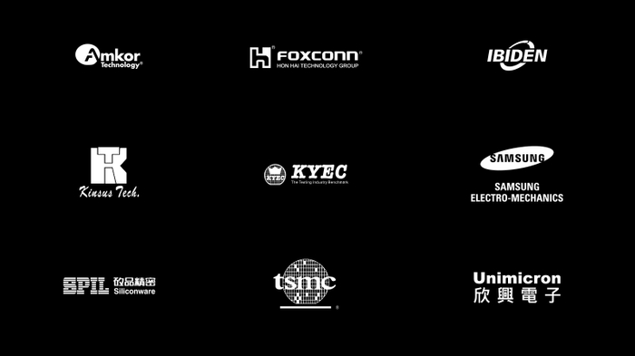

11 月 17 日这一天，Nvidia 同时办了三件事。发布第三财季财报：营收 $115.8B、同比增长 103%、净利润 $65.3B 翻倍，数据中心一个板块就吃掉 93%。在 CNBC 的节目上，临时 CEO Colette Kress 确认董事会不打算让黄仁勋回来。同一天，公司宣布不再向中国销售 H200，而 WSJ 关于 SEC 民事调查的报道也见了报。一份几乎是历史上最好看的季报，和一个空缺的创始人座位，被塞进了同一个 24 小时。
一、背景：33 年、两个星期、一场没有先例的交接
黄仁勋在 Nvidia 干了 33 年，把公司从显卡厂商做成 AI 时代唯一的收费站。两周前他辞职，理由是自己"个人生活中犯了严重错误，给董事会造成了问题"，并承诺配合董事会的独立调查。董事长 Harvey Jones 在首次财报电话会上说，董事会一致接受辞呈，无意让他复任。
问题在于，这不是一次普通的 CEO 更替。Nvidia 的章程允许剩余 10 名董事以简单多数任命 CEO，不需要股东投票——也就是说，一家市值以万亿美元计、正在决定全球算力分配的公司，最高人事权握在十个人手里，且没有公开的时间表。财报电话会本来是用来解释数字的，这次先要解释治理。
二、核心：一份挑不出毛病的季报
数字本身
截至 10 月 25 日的第三财季：营收 $115.8B，环比 +20%、同比 +103%；数据中心 $107.6B，环比 +21%、同比 +110%；GAAP 毛利率 74.8%；营业利润 $77.5B（同比 +115%）；净利 $65.3B（同比 +105%）；摊薄每股收益 $2.70（同比 +108%）。作为对照，去年同期营收是 $57.0B——一年时间，规模翻了一倍还多。
更值得看的是下一季的指引：营收 $130.0B（±3%，且该季度多一个工作周），毛利率指引 71.0%–72.0%。两句话放在一起读才有意思——收入继续环比涨 12%，毛利率却要掉 3 个百分点。官方的解释藏在脚注里：指引中不假设来自中国的任何数据中心计算收入。
「我们的势头是真实的。Nvidia 是一家卓越的技术领导者，靠的是员工不懈的创新。Vera Rubin 开局凶猛，路线图按计划推进，我们的野心从未如此之大。」
Vera Rubin 与公司史上最快的一次爬坡
产品侧的动作比数字更硬。Vera Rubin NVL72 已经开始出货，Nvidia 称这是公司历史上最快的产品爬坡，机架已经在 CoreWeave、Google Cloud、Microsoft Azure、Oracle Cloud Infrastructure 和 Nebius 跑起来。同期宣布的还有 Vera CPU 机架级平台、Rubin HPC GPU、DSX POD 模块化 AI 工厂参考设计，以及一个专门给智能体做的安全底座——Open Agent Safety Platform，用 BlueField-4 DPU 上的 Sentry 在硅片层面监控 agent 行为。

还有一条被财报数字盖住的消息：Nvidia 宣布了收购 Hugging Face 的协议。卖铲子的公司买下全球最大的模型分发平台，这个动作的含义比任何一个季度的毛利率都长远。财报同时披露，9 月董事会把回购授权增加了 $1500 亿，本季已向股东返还 $28.1B，剩余授权约 $227.3B，下一季度股息维持每股 $0.25。
中国：从收入表上的一行，到指引里的 0
Kress 在周二明确表示，Nvidia 将不再在中国销售 H200，终结了此前由黄仁勋与特朗普政府斡旋、芯片需经美国境内并缴纳 25% 关税的出口通道。配合指引里"零中国数据中心收入"的假设，这不是一次临时调整，而是把地缘风险一次性从模型里剔出去。与此同时，美国商务部那份 132 页的出口管制新规开始生效：对新加坡、马来西亚、泰国、印尼、巴西实施芯片出口许可，限制中国公司境外租用算力（上限约 200 颗 Blackwell 或 800 颗 H100）。
三、各方反应：签名、调查与一个"泡沫"指控
员工和用户这一侧的情绪是罕见的。超过 18.5 万 人签署"与黄仁勋站在一起"的公开信，要求他复职并彻查辞职经过；Epic Games 的 Tim Sweeney、Replit 的 Amjad Masad 公开质疑辞职时机。Semafor 的报道更具体：尽管董事长否认，仍有部分董事在推动回归，黄仁勋在财报发布前与至少 1 名董事谈过此事；另一派董事则把候选人范围缩到 Arm CEO Rene Haas 和 Marvell CEO Matt Murphy。
黄仁勋本人发了声明：感谢支持，承认个人错误，承诺配合独立调查，并表示"如果董事会认为回归符合股东、员工、公司和美国的最佳利益，我将荣幸地回归 CEO 职位"。
监管这一侧不太友好。WSJ 报道 SEC 已就 Nvidia 的披露问题启动民事调查——焦点之一是公司自截至 2025 年 7 月的季度后停止单独披露新加坡收入，而那个季度新加坡账单高达 $10.2B、占总营收 22%，公司当时的解释是客户在新加坡开票、芯片几乎都发往别处。调查启动的时间点，恰好与 CEO 离任重合。
行业内的两种声音几乎对立。奥尔特曼在彭博社的采访里表示同情——他自己 2023 年也被 OpenAI 董事会罢免过——并相信 AI 行业能平稳度过；他同时提到 Nvidia 已同意为 OpenAI 俄亥俄州数据中心项目提供最高 $1,050 亿 的担保支持，并不担心这笔支持生变。另一边，Ed Zitron 的长文把话说得更重：所谓 AI 泡沫本质上是 Nvidia 泡沫，循环融资、渠道压货和围绕出口管制的争议性交易共同撑起了增长机器，创始人离场后这套模式难以为继。
四、深度解读：毛利率掉的那 3 个点，比营收涨的 20% 更说明问题
把这份财报拆开看，有三条线索值得盯。
第一，卖芯片变成了卖工厂。营收结构正在从单卡转向 NVL72 整机柜、DSX POD 集装箱式 AI 工厂、Vera CPU 机架这些系统级交付。这是好事——单笔订单金额上一个量级，客户粘性更强；也是坏事——毛利率从 74.8% 掉到 71%–72%，因为机架里塞进了更多非 Nvidia 毛利的东西：结构件、光模块、电源、散热。指引里的 3 个点，就是"系统集成商"这个新身份的定价。
第二，中国被一次性计提。过去的中国业务是收入表上一行要解释的数字，现在直接写进指引的"不假设"一栏，还顺手关掉了 H200 的关税通道。这在财务上是干净的做法——把不确定性一次出清，后面每个季度的超预期都变成纯粹的加分项。代价是长期市场结构：一旦中国客户把采购转向国产替代，这条渠道不会因为政策松动而自动回来。
第三，治理风险开始有价格。一家营收年化超过 $4000 亿的公司，CEO 人选由 10 名董事简单多数决定，同时 SEC 在查披露口径，创始人还在公开表态"愿意回来"。这种状态每多持续一个季度，估值里就多一份折价。市场的反应也印证了这一点：财报数字全面超预期，但真正被反复讨论的是董事会而不是毛利率。
再往远看一步，Nvidia 这一季的叙事已经从"卖算力"变成"卖智能体的基础设施"——Open Agent Safety Platform、Nemotron for Science、与 Palantir 的主权 AI 合作、收购 Hugging Face，全都在往应用和分发层伸手。当模型的边际成本被压到接近零，钱会流向两头：造算力的，和分发智能的。Nvidia 想同时站在这两头。
五、一句话总结
这份财报证明 Nvidia 的生意比任何时候都好，也证明它比任何时候都更依赖一个不在场的人——创纪录的数字和空缺的 CEO 座位，是同一枚硬币的两面。
原文：NVIDIA Announces Financial Results for Third Quarter Fiscal 2027（NVIDIA 官方新闻稿）｜Nvidia is abandoning China after Jensen Huang's ouster（TechCrunch）｜配图：NVIDIA 官方新闻稿